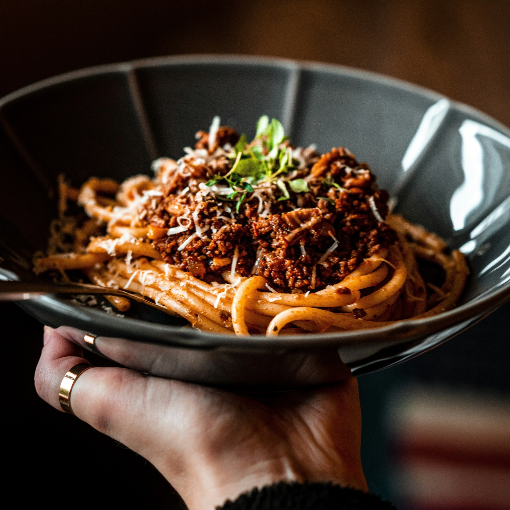

Back to home
Pasta Bolognese

Description
Pasta Bolognese is a classic Italian dish that is made with spaghetti and a tomato-based, ground beef sauce.
It is a simple dish that is easy to make and tastes great.
Ingredients
- Spaghetti
- 500 g of Ground beef
- 2 finely chopped cloves of Garlic
- 1 finely chopped Onion
- 2 finely chopped small carrots
- 1 can of crushed tomatoes
- 1 tbsp of tomato puree
- 1 tsp of sugar
- 1 tsp of salt
- A pinch of black pepper
- 1 tbsp of olive oil
- 1 tbsp of Oregano
- 1 tbsp of Thyme
- 1 tbsp of Basil
- 1 tbsp of soy sauce
- 1 tbsp of concentrated beef broth
- 1 bay leaf
Steps
- In a large pot, heat the olive oil over medium-high heat. Add the onion, carrots, and garlic and cook until the onion is translucent.
- Add the ground beef and cook until it is browned.
- Add the crushed tomatoes, tomato puree, sugar, salt, black pepper, oregano, thyme, basil, soy sauce, concentrated beef broth, and bay leaf. Bring to a boil and then reduce heat to a simmer.
- Simmer for at least 45 minutes to 1 hour.
- While the sauce is simmering, cook the spaghetti in a large pot of boiling salted water until al dente. Drain and set aside.
- Serve the pasta with the sauce and some grated parmesan cheese.